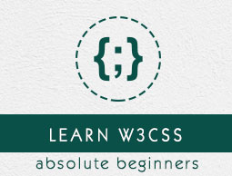
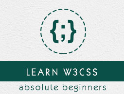

Themes
reveal.js comes with a few themes built in:
Black (default) -
White -
League -
Sky -
Beige -
Simple
Serif -
Blood -
Night -
Moon -
Solarized
Sistema de automatización para el proceso de control de inventario
Presentado por: Gabriel Salazar / github: @gabosoam Cineto Telecomunicaciones S.A. http://www.cineto.net ITS Benito Juárez http://institutobenitojuarez.edu.ec
Objetivo general
Desarrollar un sistema de control de inventario, mediante herramientas de desarrollo de software, para la automatización del proceso de entrada y salida de productos.
Objetivos específicos

- Recolectar información necesaria sobre procedimientos en la entrada y salida de productos mediante sitios web y reuniones mantenidas con el personal de Cineto Telecomunicaciones S.A. para la identificación de las necesidades del cliente
- Diseñar la estructura para el sistema de automatización de control de inventario, de acuerdo a la información recolectada y analizada, para la definición en detalle de entidades y relaciones de la base de datos, así como el diseño de las interfaces gráficas.

- Codificar algoritmos y estructuras de datos definidos en las etapas anteriores, utilizando el lenguaje de programación java, siguiendo estándares de programación en capas para que el sistema sea escalable.
Herramientas utilizadas


Aplicación web
Diseño
Base de datos
Interfaz gráfica
 

Programación
Del lado del cliente
Del lado del servidor
Código